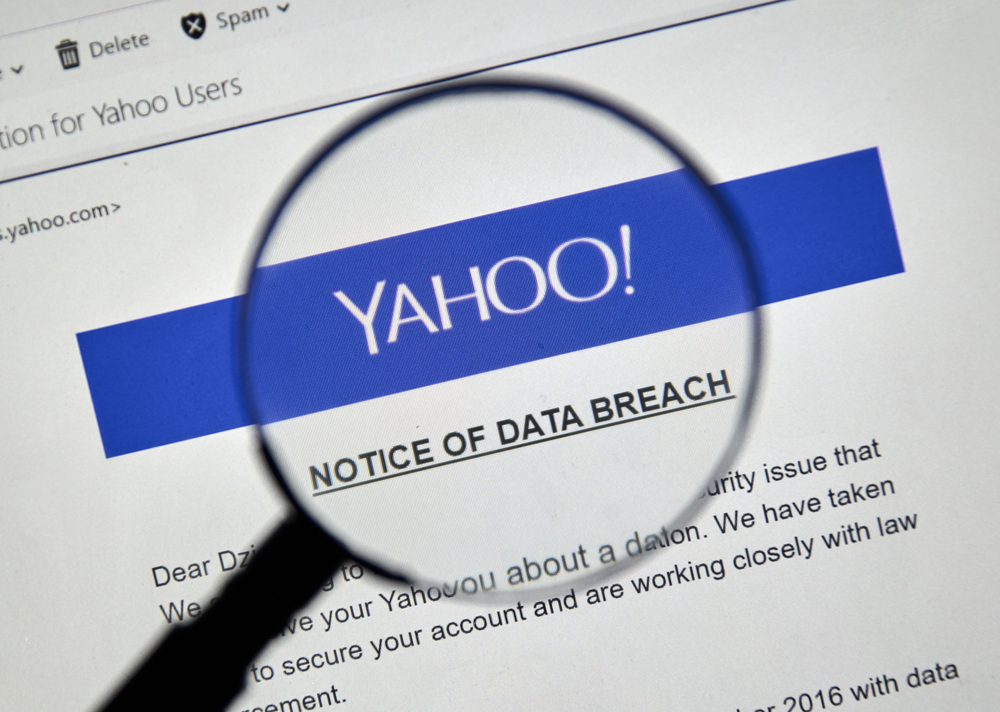

Familiarize Yourself with Password Attacks: Brute Force, Dictionary Attacks, and How to Defend Against Them
What are Password Attacks
Password attacks are attempts by cybercriminals to gain unauthorized access to your accounts or systems by cracking or guessing your passwords. Two common types of password attacks are brute force and dictionary attacks:
- Brute Force Attack: In a brute force attack, the attacker systematically tries every possible combination of characters until they guess the correct password.
- Dictionary Attack: A dictionary attack involves using a list of common passwords or dictionary words to attempt to break into an account. This method is faster than brute force because it uses precompiled lists of known, frequently used passwords.
Real-Life Example: The Yahoo Data Breach
One of the largest data breaches in history occurred in 2013 and affected Yahoo. Over 3 billion accounts were compromised, primarily due to weak passwords that attackers exploited through password-guessing techniques, including brute force and dictionary attacks. The breach exposed sensitive information such as names, phone numbers, and hashed passwords, ultimately causing significant financial and reputational damage to Yahoo. It highlighted the dangers of using weak passwords and reusing them across multiple platforms.
Risks of Not Defending Against Password Attacks
- Account Compromise: Weak or reused passwords make it easier for attackers to take over your accounts, giving them access to everything from your emails to your bank accounts.
- Identity Theft: Once attackers have your password, they can steal your personal information, apply for loans in your name, or commit other fraudulent activities.
- Financial Loss: Whether through personal accounts or business systems, attackers can steal funds, drain bank accounts, or cause significant financial damage.
- Reputation Damage: For businesses, a breach caused by weak passwords can erode customer trust and damage your brand’s reputation.
How to Defend Against Password Attacks
Password Strength Checker
Strength: